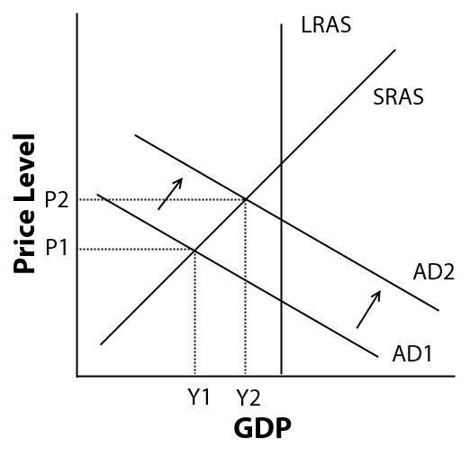
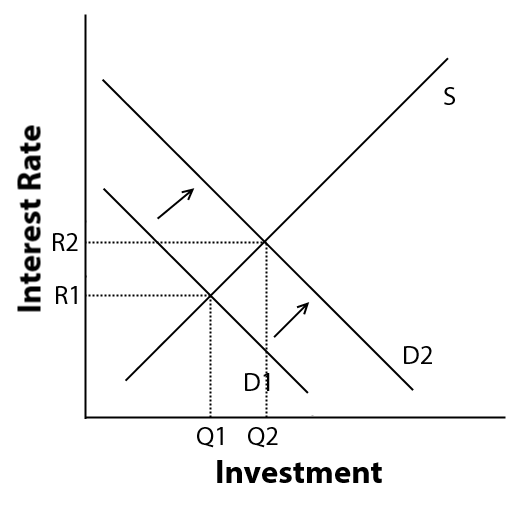

Fiscal Policy
Extra Credit
By Rohan Mathur (Period 8)
AS/AD graph in recession + increased government spending

How does increased government spending cause this?
- Government spending will increase dramatically as per the question
- Unemployment will go down, because more jobs are created in society due to that increase in spending
- More money will create more disposable income for people to use at their will
- More disposable income means that people are more likely to spend more money on other things
- Greater demand, which shifts the AD curve from AD1 to AD2
- Output and price levels both increase due to the increased demand
Effect deficit spending on real interest rate on loanble funds

How does the crowding out effect work?
- The Government increases spending which leads to deficit spending/government borrowing
- Demand goes up in the loanable funds market
- Interest rate goes up
- Business investment rate goes down
- Aggregate demand does not create as much as intended
- This offsets the fiscal policy, thus causing the crowding out effect
Effect of Deficit Spending on Long-Term Economic Growth
- People will be worried about future productivity and potential decreases
- Investment quantities may falter